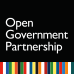

OGP의 제 11대 의장국으로서
대한민국 열린정부와 정부혁신 핵심 성과를 국내·외에 홍보하고
“열린회복, 열린도약(Open Renewal)”이라는 OGP 미래비전을 국제사회에 제시
OGP는 개방과 투명, 참여라는 열린정부 가치를 체계적으로 확산하기 위해
78개국 정부와 76개의 지방정부 그리고 전 세계 시민단체가 가입해 활동하고 있는 국제 민관협의체로,
대한민국은 OGP의 제11대 의장국으로서 이번 행사를 진행하였습니다.
이번 행사는 그간의 대한민국의 민주주의와 열린정부 성과를 국제사회와 공유하고 국제사회에 열린정부를 선도해 나간다는 점에서 큰 의미가 있으며, ‘열린회복, 열린도약’ 이라는 슬로건을 통해 열린정부의 가치로 더 나은 일상으로의 회복과 새로운 도약을 이루어 나가자는 향후 10년의 비전을 국제사회에 제시하였습니다.

‘21.12.15.~12.17.(3일)/서울 코엑스 (온·오프 병행)
78개 회원국 정상·장관급 인사 및 시민단체 등
시민영역·국민참여 강화, 반부패, 포용적 디지털 혁신
각국 정부의 투명성 향상, 시민참여 활성화 및 정부와 시민사회의 협력 증진을 위해 2011년에 설립된 국제 민관협의체로, 2021년 현재 열린 민주주의를 위한 정부와 시민사회 간의 국제적인 연대로서 정부와 국민의 소통을 확대하는 일에 중추적인 역할을 하고 있습니다.
대한민국 대통령
유엔(UN) 사무총장
유엔거버넌스센터 원장
세계보건기구(WHO) 사무총장
대한민국 행정안전부 장관
OGP 시민사회 의장
미국 대통령
캐나다 총리
에스토니아 총리
프랑스 대통령
인도네시아 대통령
케냐 대통령
에콰도르 대통령
조지아 총리
모로코 총리
나이지리아 대통령
우크라이나 총리
대한민국 열린정부위원회 공동위원장
OGP 사무총장
스코틀랜드 열린정부 포럼
시민사회의장
OGP 운영위원
몰도바 총리
OGP 특사
슬로바키아 총리
OGP 운영위원
OGP 국가지원 부국장
대한민국 행정안전부 장관
OGP 시민사회 의장
이탈리아 공공행정부 장관
OGP 차기 시민사회 의장
에스토니아 국무부 장관
OGP 시민사회 부의장
OGP 국가지원 부국장
열린계약파트너십
유럽 수석 프로그램 관리자
부르키나파소 비정부기구
공동창립자 및 회장
열린정부 멕시코
시민사회 핵심 그룹 기술 코디네이터
비영리단체 네트워크 개발 간부회의(CODE NGO Philippines)
부이사
NGO FIMA 사법권접근성지원부 변호사
시대전환 대변인
대한민국 국무총리
OGP 운영위원
미국 국제개발처 처장
OGP 창립 운영위원회 회원
OGP 운영위원
대한민국 대통령비서실
시민사회수석비서관
포드 재단 이사장
여성을 위한 평등한 정의
공동 디렉터
경제협력개발기구(OECD)
사무총장
OGP 시민사회 부의장
OGP 운영위원
OGP 운영위원
멕시코 정보투명접근 및
개인정보보호청(INAI)
청장
나이지리아 경찰 위원회
인권 명예 대표
인볼브 CEO
대한민국 열린정부위원회
위원
오픈소사이어티재단 총재
OGP 주제별 정책 분야 팀장
국제예산협의체 전무이사
B팀 전략팀장
국민권익위원회 위원장
국제탐사보도언론인협회 사무국장
아제르바이잔 탐사보도 언론인
작가
모 이브라힘 재단 창립자 겸 의장
한국투명성기구 사무총장
라트비아 의원
반부태고등법원 법원장
국제투명성기구 의장
BHP 최고준법감사책임자(CCO)
국가반부패청 청장
콜롬비아 보고타시 데이터분석기관 수익 및 얼라이언스 리더
Data & Society 상무
과학기술정보통신부 장관
뉴질랜드 연립 정부 혁신가
코드포코리아 디지털 활동가
프랑스 공공서비스부 장관
에스토니아 국무부 장관
아르헨티나 부에노스아이레스시 비서실장 겸 대외담당
보건혁신연합 공동대표
캐나다 재정위원장
디지털 권리재단 이사
트위터 글로벌 공공정책전략 파트너십 디렉터
행정안전부 재난안전관리본부장
세계여성이사협회 한국지부 회장
국제백신연구소 사무총장
시민사회발전위원회 위원
주한 에스토니아 대사관 대사
외교부 심의관
코드포코리아 활동가
액션 에이드 사무차장
Accountability Lab 이사
행정안전부 정부혁신조직실장
OGP 사무차장
프리드리히 나우만 재단 모로코 프로젝트 코디네이터
UN 청년대표단 네트워크 공동설립자
굿 로비 이탈리아 정책담당
열린정부협회·민주도시협회의 시민의식 에이전트 프로그램 프로젝트 어시스턴트
한국외국어대학교 학생
사헬리안 타임즈 편집장
서울여자대학교 학생
국가 개혁과 근대화분야 공공관리 컨설턴트
유엔 국제이주기구 자문위원, 연구원
이화여자대학교 학생
고려대학교 학생
고려대학교 학생
장애&포용 분야 활동가
멕시코 열린정부파트너십 시민사회 핵심그룹 기술 코디네이터
OGP 청년대표단
고려대학교 학생
고려대학교 학생
서인도대학교 학생
정보의 자유를 위한 청년연합 국가 의장
시민 소프트웨어 재단 연구 및 교육 디렉터
은행권청년창업재단 매니저
파푸아뉴기니 정보통신기술부 정책 및 신기술국 인프라 투자 선임담당관
디지털 기술 가속화 및 혁신 허브 공동 설립자
레이크허브 재단 홍보 전문가
열린계약파트너십 선임 프로그램 매니저
시대전환 정책플랫폼국장
시대전환 대변인
대통령비서실 정무수석실 청년비서관
OGP 시민사회 부의장
시민영역·국민참여 강화, 반부패, 포용적 디지털 혁신을 주제로, 대한민국 시민 사회 단체가 주도적, 자발적으로 논의를 진행하며 열린정부 사례를 공유하는 자리이다.
| 구분 | 회의주제 | 주관 | |
|---|---|---|---|
| 시민영역 | 개인정보 미래포럼: 디지털 시대 국민 눈높이에 맞는 개인정보보호 수준 설정과 개인정보처리의 책임성 확보, 자율적 보호활동 및 문화 증진 |
개인정보보호위원회 혁신기획담당관 |
영상보기 |
|
『개인정보 미래포럼』은 디지털 시대에 걸맞은 ‘정보주체 중심의 개인정보 보호·활용 생태계’ 모색을 위한 사회적 공론장으로서, 각계 전문가가 모여 개인정보와 관련된 주요 아젠다를 제안·발굴하고 정책과제를 도출하는 등 개인정보보호위원회의 정책자문기구로서의 역할을 하고 있다. 이번 제9차 개인정보 미래포럼은 ‘국민 눈높이에 맞는 개인정보보호 수준 설정과 개인정보처리의 책임성 확보, 자율적 보호활동 및 문화 증진’을 주제로 발제와 토론이 있을 예정이다. 연사
|
|||
| 시민영역 | 한국 정부의 국민참여 성과 및 발전방향 | 행정안전부 | 영상보기 |
|
문재인 정부는 출범 초기부터 “국민의 나라 정의로운 대한민국”을 슬로건으로 국민참여를 국정 운영의 주요 원칙으로 내세웠다. 정부는 국정과제를 선정하는 단계부터 “광화문 1번가”를 통해 국민의 의견을 수렴하였을 뿐만 아니라, 이후로도 참여 제도 개선, 참여 플랫폼 구축, 각종 참여 사업 확대 등 다양한 방법으로 국민의 참여 기회 확대와 국민 의견의 정책 반영을 위해 지속적으로 노력하였다. 이 세션 에서는 한국 정부의 이러한 노력들의 성과를 살펴보고, 앞으로 국민참여 정책이 나아가야 할 방향에 대해 논의하고자 한다. 연사
|
|||
| 시민영역 | 경청과 공공소통 : 시민 이해와 공감, 참여를 위한 공공커뮤니케이션 디자인 |
OECD 대한민국정책센터 OECD 경제협력개발기구 |
영상보기 |
|
열린정부 구현, 투명성 및 시민 참여 제고를 위한 공공소통 사용방안을 제시하고 경청, 이해 및 시민의 요구와 성향에 대응하는 반응형 공공소통에 대한 논의를 진행한다. 연사
|
|||
| 시민영역 | 정부혁신의 관점에서 바라본 청년의 사회참여 및 권리 증진 |
정책과 입법연구소 | 영상보기 |
|
정부혁신 방향의 국민참여와 협력부분과 연계해 고용·주거·교육·복지·문화 등 청년권리 증진과 사회참여에 대해 논의한다. 청년이 행복한 나라를 만들기 위해 기존 청년정책 추진과 관련된 제도를 분석하고 평가하여 정책적 효과를 높인다. 이번 세션에서는 청년 주도의 사회참여를 통해 청년들이 체감할 수 있는 새로운 사회변화를 제시하고, 정책개혁과 제도개선 및 대안을 모색한다. 연사
|
|||
| 시민영역 | 외국인 체류자 및 난민에 대한 아시아 시민사회의 참여 와 연대 |
동아시아연구원 | 영상보기 |
|
유엔 난민기구(The United Nations High Commissioner for Refugees, UNHCR)는 비자발적으 로 이주해야만 했던 전 세계 이주자를 8,240만으로 집계하고 있다. 이 가운데 본국으로 강제 송환할 수 없는 국제법적 지위를 갖는 난민은 2,640만에 이른다. 중동과 북아프리카가 주요 난민 송출지역이 었으나 미얀마 사태를 계기로 보았듯이 아시아도 예외는 아니다. 앞으로 분쟁, 기후변화로 인한 자연 재해, 물 부족 사태 등 수많은 인간안보를 위협하는 문제들이 발생하면서 아시아 국가들의 공동 대응이 필요하게 될 것이다. 상대적으로 부유하고 민주주의가 발전한 한국과 일본에서 난민수용은 법적으로 까다롭고 대중의 반대도 아직 크다. 한편, 난민캠프를 세워 이들에 대한 지원을 감당하는 나라는 방글 라데시, 태국, 인도 등에 집중되어 있다. 아시아의 시민사회는 난민과 이민 문제를 정부나 국제기구 에만 맡기지 말고 지역 공통의 문제로 인식하고 어떻게 함께 참여해서 문제를 해결할지 의견들을 모아 가야 한다. 본 분과회의는 외국인 난민과 이주민을 보호하고 지원하는 일에 있어 4개국 시민사회의 참여 현황을 점검해 봄으로써 문제점들을 확인하고 개선 방향을 찾아보고자 한다. 연사
|
|||
| 시민영역 | OGP청년워킹그룹 제안발표회 (대한민국 OGP국가실 행계획 모니터링 및 제안) |
행정개혁시민연합 | 영상보기 |
|
열린정부파트너십(Open Government Partnership)의 청년워킹그룹이 제5차 대한민국 열린정부 국가실행계획을 모니터링하고 청년세대의 정책제안 결과에 대해서 발표한다. 약 6개월여 간의 워킹 그룹 활동결과인 조별 정책 제안과제와 참여학생들의 거버넌스 실천 경험을 공유한다. 연사
|
|||
| 반부패 | 한국의 반부패정책 성과와 교훈 | 국민권익위원회 | 영상보기 |
|
지난 시기 부패문제 해결을 위한 국민의 열망에서 출범한 문재인 정부는 반부패를 국정기조로 설정 하였다. 한국정부는 반부패 총괄 기관인 권익위를 중심으로 반부패 정책을 추진하여, 이해충돌방지법, 공공재정환수법 제정 등 제도개혁과 고위공직자범죄수사처 등 전담 기관의 신설, 공공기관 채용 비리 근절, 갑질 근절 등 국민생활 관련 부패 개선 등의 성과를 이루었다. 또한, 분야별 민간 위원 중 심의 청렴사회민관협의회는 특수활동비 개선, 법조계 등 전관예우 폐지 등 사각지대에 있던 개혁 과제를 추진하였다. 한국정부의 노력은 2018년 4월 수립된 ‘5개년 반부패종합계획’을 통하여 관리 되고 있다. 50개 과제로 이루어진 이 계획은 반부패 제도 개혁, 공직윤리 강화, 민간의 부패 개선, 부패의 적발과 처벌 강화, 반부패 인식의 정착을 지향하고 있으며, 이번 정부 임기 말까지 지속적으로 추진될 것이다. 이 세션을 통하여 우리는 지난 5년간 한국정부의 반부패 노력과 성과를 살펴볼 것이다. 연사
|
|||
| 반부패 | 청년옴부즈만 활동 확산을 위한 민관학의 협력방안 | 행정개혁시민연합 | 영상보기 |
|
청년옴부즈만의 중요성과 필요성을 어필하고, 그간 행정개혁시민연합이 진행해온 청년옴부즈만 사업 성과를 공유한다. 그리고 학교, 공공기관, 시민단체가 한자리에 모여 청년옴부즈만 확산을 위한 민·관·학 협력 방안을 논의하는 자리이다. 행정개혁시민연합은 2018년부터 서울시, LH, SH, 국민권익위원회, KALIS와 함께 협력하여 청년옴부즈만 사업을 진행해왔다. 청년옴부즈만 활동은 이론으로만 접했던 행정과 정책에 대한 현장을 접해보고, 정책 담당자들과의 소통 기회뿐만 아니라 청년들끼리 모여서 능동적으로 이야기 나누고, 협력하는 환경을 선제적으로 제공한다. 청년의 시각으로 주변에 산재하여있는 다양한 사회 문제들을 인식하고, 더 나아가 제도의 문제점과 사각 지대를 발굴하여 대안을 제안할 수 있도록 한다. 이러한 과정을 통해 발굴한 정책 아이디어가 실제 정책에 반영될 수 있도록 청년들끼리 소통하고, 연결되는 환경들의 확산이 필요함을 논의한다. 연사
|
|||
| 반부패 | 민·관협력 파트너십 구축을 통한 반부패 청렴정책 구현 | 국민권익위원회 | 영상보기 |
|
부패문제는 더 이상 정부문제에 한정되지 않으며 국가기관의 권력형 부패외에도 기업·개인 영역 에서의 일상적 부패 등 그 양상은 점점 더 복잡한 형태로 나타나, 사회의 다양한 분야에서 함께 노력해야 할 문제가 되었다. 이에 정부주도의 반부패정책 수립방식에서 벗어나, 정부와 민간이 협력하여 반부패정책 방향을 모색하는 것은 사회 전반의 청렴성을 향상시키기 위해 매우 의미있고 필요한 일이 될 것이다. 국민 권익위원회는 반부패 총괄 기관으로서, 이번 2021 열린정부파트너십 글로벌서밋 행사를 통해 한국의 민·관협력 거버넌스를 소개하고, 나아가 민·관협력 파트너십 구축을 통한 반부패 청렴정책 구현 방안을 모색하고자 한다. 연사
|
|||
| 반부패 | 명예훼손의 비범죄화 | 정의연대 | 영상보기 |
|
한국의 경우 명예훼손죄는 형사 및 민사소송의 대상이 되고 있다. 문제가 되는 이유는, 첫째, 누군가 사실을 적시한 때도 형사처벌을 받을 수 있다는 점이고, 둘째, 누군가 공익적인 사실을 알렸을 때도, 형사처벌을 받는 경우가 발생하고 있다는 것이다. 공익적인 사실인 경우에는, 한국의 법은 형사소송 대상에서 제 외되지만, 현실에서는 지켜지지 않고 있다. 한편, 성추행 피해자가 이 사실을 알려도 ‘사실을 말했다’라는 이유로 가해자로부터 형사소송을 당한다. 이러한 현실은 한국사회의 신뢰 지수나 투명성지수를 떨어뜨리고 인권을 침해하는 요인이 되고 있다. 유엔 인권위에서도 한국에 명예훼손죄의 비범죄화(민사소송으로 해결)를 2차례나 권고한 바 있으나, 현재 국회에 관련 개정법률안이 계류되어 있는 등 ‘명예훼손죄의 비범죄화’를 위한 법 개정은 이루어지고 있지 않다. 이 토론회를 통해 사실적시나 공익제보와 관련한 명예훼손죄 적용의 문제점을 알아보고 한국의 투명성과 부정부패지수를 낮추는 계기가 마련되기 바란다. 연사
|
|||
| 디지털 | 대한민국, 공공데이터 추진 성과와 향후 방향 | 행정안전부 한국지능정보사회진흥원 |
영상보기 |
|
2013년부터 2021년 현재까지 우리나라 공공데이터 정책 추진 현황과 주요 성과를 검토해 보고, 이를 바탕으로 2022년 이후 공공데이터의 새로운 전략으로서 공공데이터2.0과 바람직한 미래방향에 대해 시민사회단체, 기업, 대학, 정부 및 공공기관 등 데이터와 관련된 각계각층 이해관계자의 의견을 수렴하는 회의이다. 연사
|
|||
| 디지털 | 공익데이터의 현재와 미래 | 사단법인 오픈넷 | 영상보기 |
|
최근 공적마스크 재고 데이터 개방 사례를 통해 알 수 있듯이 사회문제 해결에 공익데이터 역할의 중요성이 증대되고 있다. 공익데이터 활용 현황을 공유하고 효과적인 활용을 위한 제도 개선 및 협업 방안을 논의 하기 위한 세션이다. 연사
|
|||
| 디지털 | 인터넷 상호접속과 열린정부운동 - 망 중립성과 표현의 자유 2.0 |
고려대학교 인터넷법클 리닉 사단법인 오픈넷 |
영상보기 |
|
“인터넷은 전화나 우편과 다르다. 인터넷이라는 ‘상품’은 단 1인에게 팔려고 해도 전세계 네트워트가 필요한데 - ‘한국인터넷만 쓰겠다’는 사람이 있을까? - 그러려면 수백개의 망사업자들이 협력해야 가능하다. 그렇다고 이를 위해서 망사업자들 사이에 전화회사들처럼 전송료를 서로 정산하려고 하다 보면 거래비용만으로 인터넷은 무너지게 된다. 결국 서로간에 전송료를 받지 않고 물리적인 접속을 유지하는 비용 즉 상호접속료만을 주고받기로 한다. 바로 이 시스템 덕에 우리는 국제전화를 조금만 해도 수만원씩 내야 되지만 인터넷으로는 수십개 나라의 수백명이 Zoom회의로 영상과 자료를 주고 받아도 거의 무료인 세상이 되었다. 이와 같은 인터넷의 성격은 열린정부 운동의 핵심이다. 정부도 인터넷에 의지해서 정보를 국민에게 공개 하고 국민도 인터넷에 의지하여 정부에 건의하고, 국민들 사이에서도 인터넷을 통해 회의를 할 수 있다. 그런데 우리나라와 인도네시아의 망중립성 규제나 인터넷 상호접속 규제가 인터넷의 장점을 제대로 살리지 못하고 있다는 목소리가 들린다. 이에 대해서 그리고 그것이 아시아 전역에 미치는 영향에 대해서 다음의 전문가들을 모시고 토의를 해본다.” 연사
|
|||
| 디지털 | 디지털 격차 해소를 위한 디지털 역량 강화 교육 | 과학기술정보통신부 한국지능정보사회진흥원 |
영상보기 |
|
대한민국의 코로나19 극복을 위한 “포용적 디지털 혁신” 과제인 “디지털 배움터” 우수 사례를 해외로 전파하고 향후 전 국민 디지털 역량 강화 추진 방향을 모색한다. 디지털 정보격차 실태조사로 살펴본 전 국민 대상 디지털역량강화 교육 정책의 필요성과 대한민국의 사례를 OGP회원국에게 공유한다. 연사
|
|||
| 디지털 | 누구나 이용할 수 있는 디지털정부 서비스 : 사용자경험 (UX) 개선을 위한 정책방향 |
행정안전부 | 영상보기 |
|
대한민국 디지털 정부는 UN, OECD 등 해외에서 최고 수준으로 평가받고 있으며, 국내에서도 지난 2020년 한 해 동안 국민 10명 중 9명이 디지털정부 서비스를 이용하는 등 높은 인지도와 이용률을 보이고 있다. 그러나 여전히 국민들은 디지털정부 서비스 이용을 어려워하고 있으며, 이는 불편한 디자인과 메뉴 등 만족스럽지 못한 사용자경험(UX)이 중요한 원인의 하나로 주목받고 있다. 이에 대한민국 정부는 스마트폰 사용 확대와 코로나19로 인한 비대면 서비스 수요 증가 등 사용자 이용행태 변화를 반영할 수 있는 UI/UX에 대한 개선방안을 고민하고 있으며, 특히 여러 취약계층을 포용할 수 있는 서비스 정책도 추진하고 있다. 본 세션에서는 국민 모두가 쉽고 편리하게 디지털 정부 서비스를 이용할 수 있도록 사용자경험(UX) 제고를 위한 대한민국의 정책사례와 민간의 서비스 전략 등을 공유하고자 한다. 이를 위해 먼저 사용자 데이터 분석을 통해 대표적인 대국민 서비스 ‘정부24’의 UI/UX 개선방안을 모색하고, 이어서 고령층 중심의 사용자 친화적인 서비스 구현을 위한 포용적 디자인 설계에 대해 논의하고자 한다. 연사
|
|||
| 디지털 | 디지털 시대의 윤리 : 데이터, 툴, 프로세스 그리고 개인 의 권리 |
OECD 대한민국정책센터 OECD 경제협력개발기구 |
영상보기 |
|
디지털 시대의 윤리는 전통적으로 인공지능(AI)과 로봇 등 데이터와 도구의 윤리에 집중하였다. 하지만, 윤리에 대해 고려할 때 공공 청렴성 및 거버넌스의 틀 안에서, 디지털 정부 프로젝트 및 이니 셔티브를 중심으로 디지털 공간의 업무 절차와 관계에 대한 부분도 포함되어야 한다. 디지털 정부가 더욱 선제적, 효과적, 협력적, 사용자 중심적인 것을 추구하고 있는 상황에서, 디지털 시대의 윤리 및 청렴성은 사람들의 권리와 자유를 보장하는데 어떤 역할을 하는가? 디지털 생태계의 행위자들이 윤리의 틀을 고수하도록 하려면 어떤 측정 및 표준 제정 도구가 필요한가? 연사
|
|||
| 디지털 | 넥스트 노멀을 위한 디지털 트랜스포메이션 : 포용적이 고 사람중심의 포스트 코로나19 시대 디지털 사회를 위 하여 |
유엔거버넌스센터 ITU 아시아 태평양 지역 사무소 |
영상보기 |
|
이 세션은 포스트 코로나19 시대 넥스트 노멀(Next Normal)을 위한 포용적이고 사람중심적인 디지털 트랜스포메이션을 위한 다양한 전략, 경험 및 혁신적 사례를 논의하고 공유하는 자리이다. 이 세션의 토론은 아래 세 개의 주요 세부 주제를 중심으로 진행될 예정이다. 연사
|
|||
{kind=link}